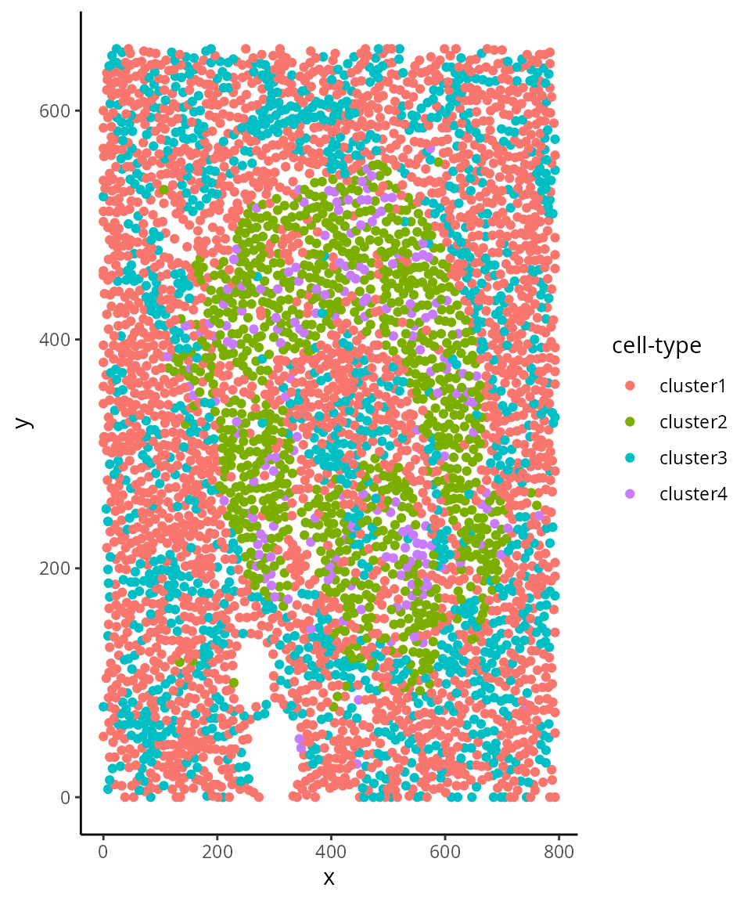

Introduction to SegmentedCells
Nicolas Canete
Westmead Institute for Medical Research, University of Sydney, Australianicolas.canete@sydney.edu.au
Ellis Patrick
Westmead Institute for Medical Research, University of Sydney, AustraliaSchool of Mathematics and Statistics, University of Sydney, Australiaellis.patrick@sydney.edu.au
14 November 2022
Source:vignettes/segmentedCells.Rmd
segmentedCells.RmdInstallation
if (!require("BiocManager"))
install.packages("BiocManager")
BiocManager::install("spicyR")Overview
A SegmentedCells is an object designed to store data
from imaging cytometry (FISH, IMC, CycIF, spatial transcriptomics, … )
that has already been segmented and reduced to individual cells. A
SegmentedCells extends DataFrame and defines methods that
take advantage of DataFrame nesting to represent various elements of
cell-based experiments with spatial orientation that are commonly
encountered. This object is able to store information on a cell’s
spatial location, cellType, morphology, intensity of gene/protein marks
as well as image level phenotype information. Ideally this type of data
can be used for cell clustering, point process models or nearest
neighbour analysis. Below we will consider a few examples of data
formats that can be transformed into a SegmentedCells.
First, load the spicyR package.
Example 1 - Data resembles cellProfiler output
Here we create a SegmentedCells from data that was
output from cellProfiler or similar programs. This assumes that there
are columns with the string AreaShape_ and
Intensity_Mean and that there are ObjectNumber and
ImageNumber columns.
Here we create toy cellProfiler data.
### Something that resembles cellProfiler data
set.seed(51773)
n = 10
cells <- data.frame(row.names = seq_len(n))
cells$ObjectNumber <- seq_len(n)
cells$ImageNumber <- rep(1:2,c(n/2,n/2))
cells$AreaShape_Center_X <- runif(n)
cells$AreaShape_Center_Y <- runif(n)
cells$AreaShape_round <- rexp(n)
cells$AreaShape_diameter <- rexp(n, 2)
cells$Intensity_Mean_CD8 <- rexp(n, 10)
cells$Intensity_Mean_CD4 <- rexp(n, 10)We can then create a SegmentedCells object.
cellExp <- SegmentedCells(cells, cellProfiler = TRUE)
#> There is no cellType column, setting to NA
#> Warning: The dim() method for DataFrameList objects is deprecated. Please use
#> dims() on these objects instead.
#> Warning: The nrow() method for DataFrameList objects is deprecated. Please use
#> nrows() on these objects instead.
#> Warning: The ncol() method for CompressedSplitDataFrameList objects is
#> deprecated. Please use ncols() on these objects instead.
#> Warning: The dim() method for DataFrameList objects is deprecated. Please use
#> dims() on these objects instead.
#> Warning: The nrow() method for DataFrameList objects is deprecated. Please use
#> nrows() on these objects instead.
#> Warning: The ncol() method for CompressedSplitDataFrameList objects is
#> deprecated. Please use ncols() on these objects instead.
#> Warning: The dim() method for DataFrameList objects is deprecated. Please use
#> dims() on these objects instead.
#> Warning: The nrow() method for DataFrameList objects is deprecated. Please use
#> nrows() on these objects instead.
#> Warning: The ncol() method for CompressedSplitDataFrameList objects is
#> deprecated. Please use ncols() on these objects instead.
#> Warning: The dim() method for DataFrameList objects is deprecated. Please use
#> dims() on these objects instead.
#> Warning: The nrow() method for DataFrameList objects is deprecated. Please use
#> nrows() on these objects instead.
#> Warning: The ncol() method for CompressedSplitDataFrameList objects is
#> deprecated. Please use ncols() on these objects instead.
cellExp
#> A SegmentedCells object with...
#> Number of images:2
#> Number of cells:10
#> Number of cell types: 1 [ NA ]
#> Number of intensities: 2 [ CD8, CD4 ]
#> Number of morphologies: 2 [ round, diameter ]
#> Number of image phenotypes: 0 [ ]Extract the cellSummary information and overwrite it as well.
cellSum <- cellSummary(cellExp)
head(cellSum)
#> DataFrame with 6 rows and 6 columns
#> imageID cellID imageCellID x y cellType
#> <factor> <character> <character> <numeric> <numeric> <factor>
#> 1 1 cell_1 cell_1 0.367243 0.820150 NA
#> 2 1 cell_2 cell_2 0.613818 0.846200 NA
#> 3 1 cell_3 cell_3 0.335930 0.318286 NA
#> 4 1 cell_4 cell_4 0.501737 0.373931 NA
#> 5 1 cell_5 cell_5 0.829350 0.140415 NA
#> 6 2 cell_6 cell_6 0.831271 0.175128 NA
cellSummary(cellExp) <- cellSumWe can then set the cell types of each cell by extracting and clustering marker intensity information.
markers <- cellMarks(cellExp)
kM <- kmeans(markers,2)
cellType(cellExp) <- paste('cluster',kM$cluster, sep = '')
cellSum <- cellSummary(cellExp)
head(cellSum)
#> DataFrame with 6 rows and 6 columns
#> imageID cellID imageCellID x y cellType
#> <factor> <character> <character> <numeric> <numeric> <factor>
#> 1 1 cell_1 cell_1 0.367243 0.820150 cluster1
#> 2 1 cell_2 cell_2 0.613818 0.846200 cluster1
#> 3 1 cell_3 cell_3 0.335930 0.318286 cluster2
#> 4 1 cell_4 cell_4 0.501737 0.373931 cluster2
#> 5 1 cell_5 cell_5 0.829350 0.140415 cluster1
#> 6 2 cell_6 cell_6 0.831271 0.175128 cluster1Example 2 - Three pancreatic islets from from Damond et al (2019)
Read in data.
isletFile <- system.file("extdata","isletCells.txt.gz", package = "spicyR")
cells <- read.table(isletFile, header = TRUE)We can then create a SegmentedCells object.
cellExp <- SegmentedCells(cells, cellProfiler = TRUE)
#> There is no cellType column, setting to NA
#> Warning: The dim() method for DataFrameList objects is deprecated. Please use
#> dims() on these objects instead.
#> Warning: The nrow() method for DataFrameList objects is deprecated. Please use
#> nrows() on these objects instead.
#> Warning: The ncol() method for CompressedSplitDataFrameList objects is
#> deprecated. Please use ncols() on these objects instead.
#> Warning: The dim() method for DataFrameList objects is deprecated. Please use
#> dims() on these objects instead.
#> Warning: The nrow() method for DataFrameList objects is deprecated. Please use
#> nrows() on these objects instead.
#> Warning: The ncol() method for CompressedSplitDataFrameList objects is
#> deprecated. Please use ncols() on these objects instead.
#> Warning: The dim() method for DataFrameList objects is deprecated. Please use
#> dims() on these objects instead.
#> Warning: The nrow() method for DataFrameList objects is deprecated. Please use
#> nrows() on these objects instead.
#> Warning: The ncol() method for CompressedSplitDataFrameList objects is
#> deprecated. Please use ncols() on these objects instead.
#> Warning: The dim() method for DataFrameList objects is deprecated. Please use
#> dims() on these objects instead.
#> Warning: The nrow() method for DataFrameList objects is deprecated. Please use
#> nrows() on these objects instead.
#> Warning: The ncol() method for CompressedSplitDataFrameList objects is
#> deprecated. Please use ncols() on these objects instead.
cellExp
#> A SegmentedCells object with...
#> Number of images:1
#> Number of cells:4650
#> Number of cell types: 1 [ NA ]
#> Number of intensities: 38 [ c1, c10, ..., c9 ]
#> Number of morphologies: 15 [ Area, Compactness, ..., Solidity ]
#> Number of image phenotypes: 0 [ ]We can then set the cell types of each cell by extracting and clustering marker intensity information.
markers <- cellMarks(cellExp)
kM <- kmeans(markers,4)
cellType(cellExp) <- paste('cluster',kM$cluster, sep = '')
cellSum <- cellSummary(cellExp)
head(cellSum)
#> DataFrame with 6 rows and 6 columns
#> imageID cellID imageCellID x y cellType
#> <factor> <character> <character> <integer> <integer> <factor>
#> 1 1 cell_1 cell_1 53 0 cluster1
#> 2 1 cell_2 cell_2 128 0 cluster1
#> 3 1 cell_3 cell_3 135 0 cluster1
#> 4 1 cell_4 cell_4 450 0 cluster1
#> 5 1 cell_5 cell_5 458 0 cluster3
#> 6 1 cell_6 cell_6 551 0 cluster3Here is a very simple plot in ggplot showing the spatial distribution of the cell types
plot(cellExp, imageID=1)
Example 3 - Custom markerintensity and morphology column names
Here we create toy data that has a slightly more fluid naming stucture.
set.seed(51773)
n = 10
cells <- data.frame(row.names = seq_len(n))
cells$cellID <- seq_len(n)
cells$imageCellID <- rep(seq_len(n/2),2)
cells$imageID <- rep(1:2,c(n/2,n/2))
cells$x <- runif(n)
cells$y <- runif(n)
cells$shape_round <- rexp(n)
cells$shape_diameter <- rexp(n, 2)
cells$intensity_CD8 <- rexp(n, 10)
cells$intensity_CD4 <- rexp(n, 10)
cells$cellType <- paste('cluster',sample(1:2,n,replace = TRUE), sep = '_')We can then create a SegmentedCells object.
cellExp <- SegmentedCells(cells,
cellTypeString = 'cellType',
intensityString = 'intensity_',
morphologyString = 'shape_')
#> Warning: The dim() method for DataFrameList objects is deprecated. Please use
#> dims() on these objects instead.
#> Warning: The nrow() method for DataFrameList objects is deprecated. Please use
#> nrows() on these objects instead.
#> Warning: The ncol() method for CompressedSplitDataFrameList objects is
#> deprecated. Please use ncols() on these objects instead.
#> Warning: The dim() method for DataFrameList objects is deprecated. Please use
#> dims() on these objects instead.
#> Warning: The nrow() method for DataFrameList objects is deprecated. Please use
#> nrows() on these objects instead.
#> Warning: The ncol() method for CompressedSplitDataFrameList objects is
#> deprecated. Please use ncols() on these objects instead.
#> Warning: The dim() method for DataFrameList objects is deprecated. Please use
#> dims() on these objects instead.
#> Warning: The nrow() method for DataFrameList objects is deprecated. Please use
#> nrows() on these objects instead.
#> Warning: The ncol() method for CompressedSplitDataFrameList objects is
#> deprecated. Please use ncols() on these objects instead.
#> Warning: The dim() method for DataFrameList objects is deprecated. Please use
#> dims() on these objects instead.
#> Warning: The nrow() method for DataFrameList objects is deprecated. Please use
#> nrows() on these objects instead.
#> Warning: The ncol() method for CompressedSplitDataFrameList objects is
#> deprecated. Please use ncols() on these objects instead.
cellExp
#> A SegmentedCells object with...
#> Number of images:2
#> Number of cells:10
#> Number of cell types: 2 [ cluster_1, cluster_2 ]
#> Number of intensities: 2 [ CD8, CD4 ]
#> Number of morphologies: 2 [ round, diameter ]
#> Number of image phenotypes: 0 [ ]Extract morphology information
morph <- cellMorph(cellExp)
head(morph)
#> DataFrame with 6 rows and 2 columns
#> round diameter
#> <numeric> <numeric>
#> 1 0.489959 1.3913000
#> 2 3.601540 0.3670445
#> 3 0.243015 0.0149731
#> 4 0.077238 1.1434083
#> 5 0.639661 0.0043457
#> 6 0.498723 0.0341195Phenotype information
We can also include phenotype information for each image. Create some
corresponding toy phenotype information which must have a
imageID variable.
phenoData <- DataFrame(imageID = c('1','2'),
age = c(21,81),
status = c('dead','alive'))
imagePheno(cellExp) <- phenoData
imagePheno(cellExp)
#> DataFrame with 2 rows and 3 columns
#> imageID age status
#> <character> <numeric> <character>
#> 1 1 21 dead
#> 2 2 81 alive
imagePheno(cellExp, expand = TRUE)
#> DataFrame with 10 rows and 3 columns
#> imageID age status
#> <character> <numeric> <character>
#> 1 1 21 dead
#> 1 1 21 dead
#> 1 1 21 dead
#> 1 1 21 dead
#> 1 1 21 dead
#> 2 2 81 alive
#> 2 2 81 alive
#> 2 2 81 alive
#> 2 2 81 alive
#> 2 2 81 aliveExample 4 - Minimal example, cells only have spatial coordinates
Here we generate data where we only know the location of each cell.
set.seed(51773)
n = 10
cells <- data.frame(row.names = seq_len(n))
cells$x <- runif(n)
cells$y <- runif(n)
cellExp <- SegmentedCells(cells)
#> There is no cellType column, setting to NA
#> There is no cellID. I'll create these
#> There is no image specific imageCellID. I'll create these
#> There is no imageID. I'll assume this is only one image and create an arbitrary imageID
cellExp
#> A SegmentedCells object with...
#> Number of images:1
#> Number of cells:10
#> Number of cell types: 1 [ NA ]
#> Number of intensities: 0 [ ]
#> Number of morphologies: 0 [ ]
#> Number of image phenotypes: 0 [ ]Extract the cellSummary information which now also has cellIDs and imageIDs.
cellSum <- cellSummary(cellExp)
head(cellSum)
#> DataFrame with 6 rows and 6 columns
#> imageID cellID imageCellID x y cellType
#> <factor> <character> <character> <numeric> <numeric> <factor>
#> 1 image1 cell_1 cell_1 0.367243 0.820150 NA
#> 2 image1 cell_2 cell_2 0.613818 0.846200 NA
#> 3 image1 cell_3 cell_3 0.335930 0.318286 NA
#> 4 image1 cell_4 cell_4 0.501737 0.373931 NA
#> 5 image1 cell_5 cell_5 0.829350 0.140415 NA
#> 6 image1 cell_6 cell_6 0.831271 0.175128 NAsessionInfo()
sessionInfo()
#> R version 4.2.2 (2022-10-31)
#> Platform: x86_64-pc-linux-gnu (64-bit)
#> Running under: EndeavourOS
#>
#> Matrix products: default
#> BLAS: /usr/lib/libblas.so.3.11.0
#> LAPACK: /usr/lib/liblapack.so.3.11.0
#>
#> locale:
#> [1] LC_CTYPE=en_AU.UTF-8 LC_NUMERIC=C
#> [3] LC_TIME=en_AU.UTF-8 LC_COLLATE=en_AU.UTF-8
#> [5] LC_MONETARY=en_AU.UTF-8 LC_MESSAGES=en_AU.UTF-8
#> [7] LC_PAPER=en_AU.UTF-8 LC_NAME=C
#> [9] LC_ADDRESS=C LC_TELEPHONE=C
#> [11] LC_MEASUREMENT=en_AU.UTF-8 LC_IDENTIFICATION=C
#>
#> attached base packages:
#> [1] stats4 stats graphics grDevices utils datasets methods
#> [8] base
#>
#> other attached packages:
#> [1] S4Vectors_0.36.0 BiocGenerics_0.44.0 spicyR_1.11.1
#> [4] BiocStyle_2.26.0
#>
#> loaded via a namespace (and not attached):
#> [1] SpatialExperiment_1.8.0 minqa_1.2.5
#> [3] colorspace_2.0-3 deldir_1.0-6
#> [5] rjson_0.2.21 rprojroot_2.0.3
#> [7] scuttle_1.8.0 XVector_0.38.0
#> [9] GenomicRanges_1.50.1 fs_1.5.2
#> [11] spatstat.data_3.0-0 farver_2.1.1
#> [13] fansi_1.0.3 codetools_0.2-18
#> [15] splines_4.2.2 R.methodsS3_1.8.2
#> [17] sparseMatrixStats_1.10.0 cachem_1.0.6
#> [19] knitr_1.40 polyclip_1.10-4
#> [21] jsonlite_1.8.3 nloptr_2.0.3
#> [23] R.oo_1.25.0 pheatmap_1.0.12
#> [25] spatstat.sparse_3.0-0 ggforce_0.4.1
#> [27] HDF5Array_1.26.0 BiocManager_1.30.19
#> [29] compiler_4.2.2 dqrng_0.3.0
#> [31] assertthat_0.2.1 Matrix_1.5-3
#> [33] fastmap_1.1.0 limma_3.54.0
#> [35] cli_3.4.1 tweenr_2.0.2
#> [37] htmltools_0.5.3 tools_4.2.2
#> [39] lmerTest_3.1-3 gtable_0.3.1
#> [41] glue_1.6.2 GenomeInfoDbData_1.2.9
#> [43] dplyr_1.0.10 Rcpp_1.0.9
#> [45] Biobase_2.58.0 jquerylib_0.1.4
#> [47] pkgdown_2.0.6 vctrs_0.5.0
#> [49] rhdf5filters_1.10.0 spatstat.explore_3.0-5
#> [51] nlme_3.1-160 DelayedMatrixStats_1.20.0
#> [53] spatstat.random_3.0-1 xfun_0.34
#> [55] stringr_1.4.1 beachmat_2.14.0
#> [57] lme4_1.1-31 lifecycle_1.0.3
#> [59] goftest_1.2-3 scam_1.2-13
#> [61] edgeR_3.40.0 zlibbioc_1.44.0
#> [63] MASS_7.3-58.1 scales_1.2.1
#> [65] ragg_1.2.4 MatrixGenerics_1.10.0
#> [67] spatstat.utils_3.0-1 parallel_4.2.2
#> [69] SummarizedExperiment_1.28.0 rhdf5_2.42.0
#> [71] RColorBrewer_1.1-3 SingleCellExperiment_1.20.0
#> [73] yaml_2.3.6 memoise_2.0.1
#> [75] ggplot2_3.4.0 sass_0.4.2
#> [77] stringi_1.7.8 highr_0.9
#> [79] desc_1.4.2 boot_1.3-28
#> [81] BiocParallel_1.32.1 GenomeInfoDb_1.34.2
#> [83] rlang_1.0.6 pkgconfig_2.0.3
#> [85] systemfonts_1.0.4 matrixStats_0.62.0
#> [87] bitops_1.0-7 evaluate_0.18
#> [89] lattice_0.20-45 tensor_1.5
#> [91] purrr_0.3.5 Rhdf5lib_1.20.0
#> [93] labeling_0.4.2 tidyselect_1.2.0
#> [95] magrittr_2.0.3 bookdown_0.30
#> [97] R6_2.5.1 IRanges_2.32.0
#> [99] magick_2.7.3 generics_0.1.3
#> [101] DelayedArray_0.24.0 DBI_1.1.3
#> [103] pillar_1.8.1 withr_2.5.0
#> [105] mgcv_1.8-41 abind_1.4-5
#> [107] RCurl_1.98-1.9 tibble_3.1.8
#> [109] DropletUtils_1.18.0 utf8_1.2.2
#> [111] spatstat.geom_3.0-3 rmarkdown_2.18
#> [113] locfit_1.5-9.6 grid_4.2.2
#> [115] data.table_1.14.4 digest_0.6.30
#> [117] tidyr_1.2.1 numDeriv_2016.8-1.1
#> [119] R.utils_2.12.2 textshaping_0.3.6
#> [121] munsell_0.5.0 concaveman_1.1.0
#> [123] bslib_0.4.1